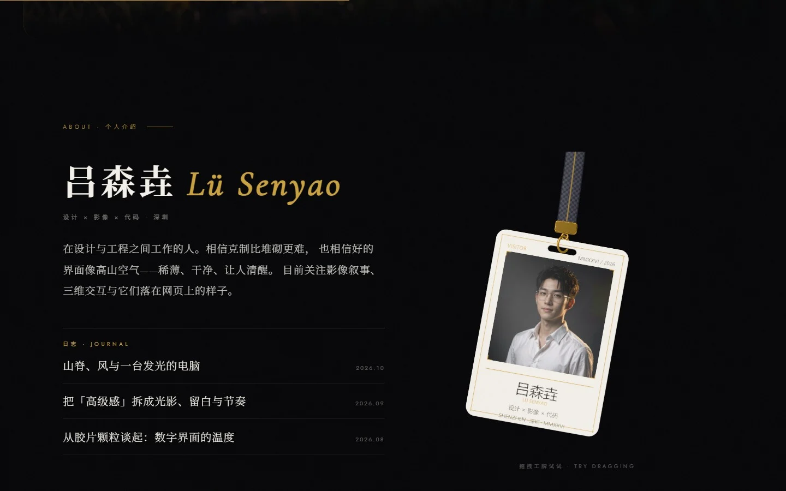
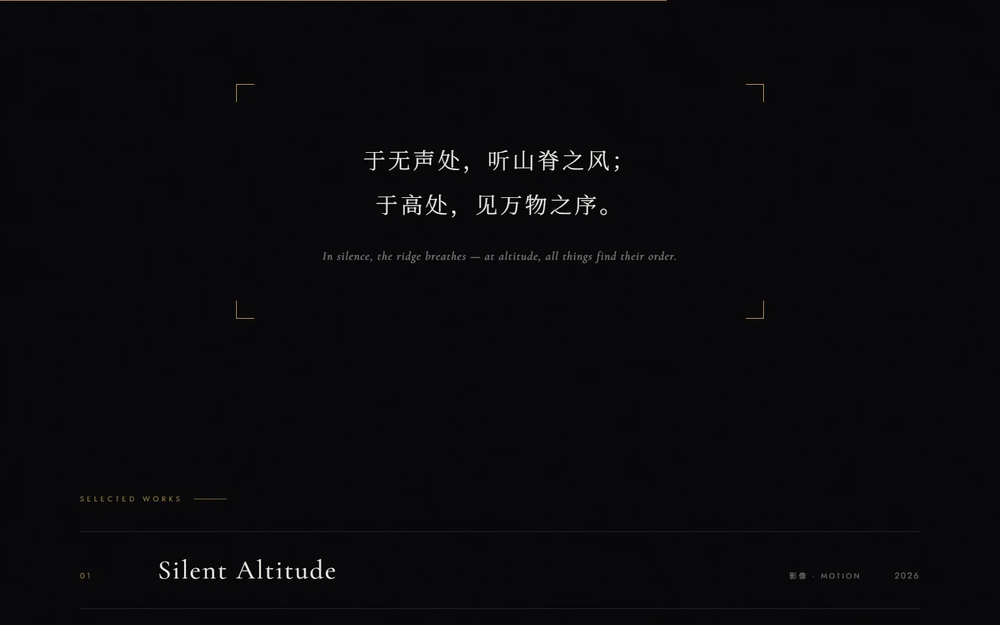
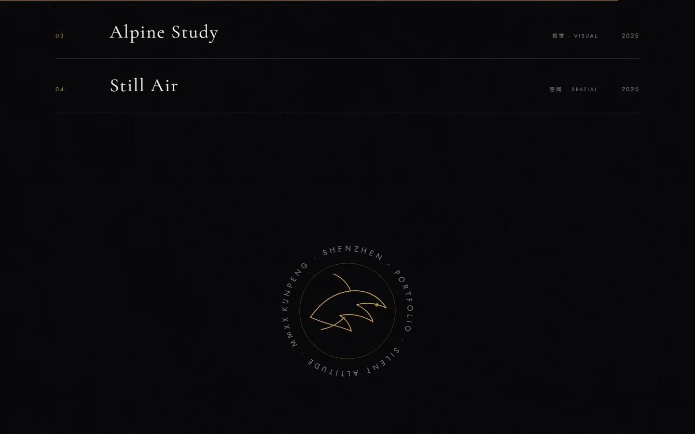

首屏
深色极简的开场。影像里一台发光的电脑立在高原草甸上， 背后是雪山与晨光——「静默海拔」这个题目本身就是对克制的一次表态。

关于 · 3D 工牌
右侧的工牌是一个可拖拽的 3D 物体：集成 React Bits 官方 Lanyard 组件， 用 Three.js 做挂绳的物理模拟，拖动时会像真工牌一样摆动、回弹。

宣言与作品列表
一段中英双语的宣言作为页面节奏的停顿，随后进入作品列表； 底部以一枚环形印章收尾。


技术实现
影像生成
视频由文生图 + 图生视频模型生成，并逐帧锚定首帧构图，保证镜头语言的连贯。
前端
基于 React + Vite 构建，构建后以静态站点直接发布上线。
3D 工牌
集成 React Bits 官方 Lanyard 组件，以 Three.js 做物理模拟。
动效
采用原生 rAF 滚动进度驱动与 IntersectionObserver，无重型依赖。
可用性
支持 prefers-reduced-motion 与移动端降级。
工具
全部在 workbuddy 中完成。
全部代码与视觉素材均由 AI 在对话中协作产出。
访问
线上为静态站点，可直接访问；桌面端可拖拽工牌，移动端自动降级。
silent-altitude-12811.app.workbuddy.host ↗